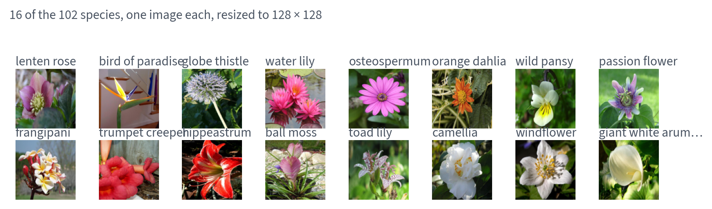
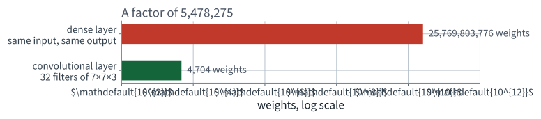
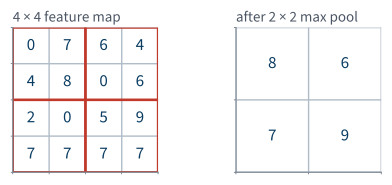
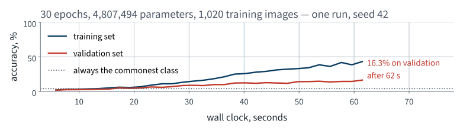
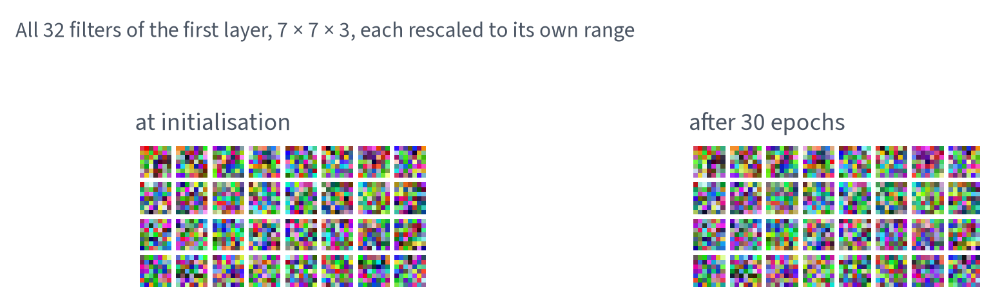
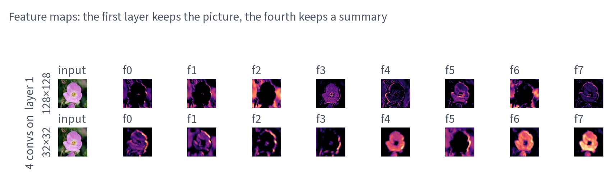

Flowers102
Lecture 12 Géron Ch. 12
Applications of Machine Learning
BSc Mathematics of Artificial Intelligence · Third year
Measured on one run of this lecture’s notebook; hardware, library versions and random seeds can make a re-run differ slightly.
Lecture 11 took a deep fully connected stack on flattened 28×28 greyscale images that would not train, and repaired it:
Today’s method fixes both problems at once, and the derivation says exactly how much it saves.
A horticultural wholesaler receives mixed pallets of cut stems and has to sort them by species before they reach the auction floor.
Same shape of problem as the garment sorter in Lecture 9. Everything that makes it harder is in the pixels.
Two requirements hiding in one sentence: a classifier over a fixed list of species, and a usable notion of confidence.
We build the first today. The second waits until the numbers are good enough to be worth calibrating.
torchvision.datasets.Flowers102 — 8,189
photographs of 102 flowering species common in the United
Kingdom.
from torchvision.datasets import Flowers102
train = Flowers102("data", split="train", download=True)
val = Flowers102("data", split="val", download=True)
test = Flowers102("data", split="test", download=True)
About 345 MB. It is one of the datasets the textbook names for this chapter, and the split used here is the one shipped with it — so every result in the literature is on the same 6,149 test images.
Measured on one run of this lecture’s notebook; hardware, library versions and random seeds can make a re-run differ slightly.

Different scales, different backgrounds, different lighting — and several of these species are hard to tell apart by eye.
Only the first of those has a structural answer. It is the answer this chapter is about.
Measured on one run of this lecture’s notebook; hardware, library versions and random seeds can make a re-run differ slightly.
| Split | Images | Per class | Used for |
|---|---|---|---|
| train | 1,020 | 10, exactly | fitting |
| val | 1,020 | 10, exactly | choosing |
| test | 6,149 | 20–238 | reporting, once |
There are six times as many test images as training images.
Measured on one run of this lecture’s notebook; hardware, library versions and random seeds can make a re-run differ slightly.
Because somebody had to look at every photograph and name the species.
Design for that. A method that needs thousands of labelled examples per class is not a method you can deploy here.
You have a multilayer perceptron that works. Resize every photograph to 128 × 128, flatten it, and feed it in.
| Count | |
|---|---|
| Inputs, 128 × 128 × 3 | 49,152 |
| Outputs, 32 values at every pixel position | 524,288 |
| Weights in one fully connected layer between them | 25,769,803,776 |
That is 96 GB of float32 for one layer. The full argument is this lecture’s mathematics block; here it is just a reason to do something else.
Measured on one run of this lecture’s notebook; hardware, library versions and random seeds can make a re-run differ slightly.
Input $3 \times H \times W$, output $32 \times H \times W$. A dense layer connects every output to every input: $n_{\text{in}} n_{\text{out}} = 96\,H^2W^2$ weights. A convolution connects each output to a $k \times k$ window of every channel, with the same weights at every position: $C_{\text{out}} C_{\text{in}} k^2 = 32 \times 3 \times 7 \times 7$, which is 4,704 weights.
5,478,275
times fewer weights at $H = W = 128$, for the same output shape.
With the 3 × 3 filters used everywhere else in the network the factor is larger again, by $(7/3)^2$: the dense count never contained $k$.
Measured on one run of this lecture’s notebook; hardware, library versions and random seeds can make a re-run differ slightly.

A logarithmic axis, and the two bars still barely fit on the same figure.
Sharing the weights assumes that a pattern means the same thing wherever it appears. Let $T_{\mathbf{v}}$ be the operator that shifts an image by the vector $\mathbf{v}$:
A map $f$ is equivariant to translation when
Shift then compute, or compute then shift — the same answer. A convolution has this property because its weights do not depend on the position; it holds exactly away from the border, where zero padding invents input that was not there.
A map $g$ is invariant to translation when
The output does not move at all, so it no longer says where. Classification wants that; equivariance alone does not give it.
A $2 \times 2$ max pool is invariant to any shift that keeps the maximum inside its own window — so half the one-pixel shifts, in each direction.
The invariance is approximate and it is built, one factor of two at a time. Nothing in the architecture declares it.
A feature worth detecting in the top left corner is worth detecting in the bottom right, so use the same weights everywhere.
Both halves were stated in the mathematics block. Here we use them.
For an input $x$ with $C$ channels and a kernel $w$ of size $k \times k$, the output at position $(i, j)$ of filter $f$ is
A dot product between the kernel and a window of the input, repeated at every position. The sum over $c$ is why a filter reads all the input channels at once.
nn.Conv2d, and the defaults you did not ask fornn.Conv2d(
in_channels=3, # must match the previous layer's output
out_channels=32, # how many filters -> how many output maps
kernel_size=7,
stride=1, # the default
padding=3, # NOT the default; the default is 0
bias=False, # a batch-norm follows, and it has its own shift
)
The default you did not ask for: padding defaults to zero, which silently shrinks every feature map by $k-1$ and will eventually give you a shape error twelve layers later.
After a couple of convolutions, halve the height and width by keeping only the largest value in each $2 \times 2$ block.
There is a fourth consequence — invariance — and it is the one the mathematics block ended on.

Sixteen numbers in, four out, and the four are the largest of each block.
Because ten layers of untreated convolutions on 1,020 images do not train. This is Lecture 11's $\rho \ne 1$ in a new architecture — and here, unlike there, initialisation alone does not reach it. Lecture 11 measured batch normalisation making a repaired network worse by 3.2 points; the size of an effect depends on what else is in the system.
BatchNorm2d normalises across the batch and both
spatial axes, so it holds one mean and one variance per channel
nn.Conv2d(c_in, c_out, 3, padding=1, bias=False)
nn.BatchNorm2d(c_out) # 2 * c_out parameters, not 2 * c_out * H * W
nn.ReLU()
Measured on one run of this lecture’s notebook; hardware, library versions and random seeds can make a re-run differ slightly.
| Stage | Layers | Output |
|---|---|---|
| 1 | conv 7×7 ×32, conv 3×3 ×32, pool | 32 × 64 × 64 |
| 2 | conv ×64, conv ×64, pool | 64 × 32 × 32 |
| 3 | conv ×128, conv ×128, pool | 128 × 16 × 16 |
| 4 | conv ×256, pool | 256 × 8 × 8 |
| head | flatten, dense 256, dropout, dense 102 | 102 |
Channels double as the map halves — the textbook’s own rule of thumb: what pooling takes away in resolution, the extra filters give back in channels.
Measured on one run of this lecture’s notebook; hardware, library versions and random seeds can make a re-run differ slightly.
def conv_block(c_in, c_out, k=3):
return [nn.Conv2d(c_in, c_out, k, padding=k // 2, bias=False),
nn.BatchNorm2d(c_out), nn.ReLU()]
net = nn.Sequential(
*conv_block(3, 32, k=7), *conv_block(32, 32), nn.MaxPool2d(2),
*conv_block(32, 64), *conv_block(64, 64), nn.MaxPool2d(2),
*conv_block(64, 128), *conv_block(128, 128), nn.MaxPool2d(2),
*conv_block(128, 256), nn.MaxPool2d(2),
nn.Flatten(),
nn.Linear(256 * 8 * 8, 256), nn.ReLU(),
nn.Dropout(0.5),
nn.Linear(256, 102),
)
Thirty modules. Nothing in it that was not on a slide in this lecture or the previous one.
x = torch.zeros(2, 3, 128, 128)
for m in net:
x = m(x)
print(f"{type(m).__name__:12s} {tuple(x.shape)}")
assert x.shape == (2, 102), f"the head is wrong: {x.shape}"
What is the shape here? Asking costs four lines. A shape error inside a training loop surfaces as a size-mismatch traceback two hundred lines deep; here it surfaces as a printed line.
| Part | Parameters | Share |
|---|---|---|
| Every convolution and batch-norm layer together | 586,720 | 12.2% |
| One dense layer, 16,384 → 256 | 4,194,560 | 87.3% |
| Output layer, 256 → 102 | 26,214 | 0.5% |
| Total | 4,807,494 | 100% |
Nine parameters in ten are in the layer that is not convolutional.
Measured on one run of this lecture’s notebook; hardware, library versions and random seeds can make a re-run differ slightly.
opt = torch.optim.Adam(net.parameters(), lr=3e-4)
lossf = nn.CrossEntropyLoss()
for epoch in range(30):
net.train()
for xb, yb in train_loader:
opt.zero_grad()
loss = lossf(net(xb), yb)
loss.backward()
opt.step()
Exactly the five lines from Lecture 10. Convolution changed the model; it did not change the loop, because autograd does not care what the modules are.
| Learning rate | Seed 42 | Seed 43 | Mean |
|---|---|---|---|
| $10^{-3}$, Adam’s default | 0.98% | 1.86% | 1.42% |
| $3 \times 10^{-4}$ | 6.86% | 4.61% | 5.74% |
Validation accuracy after 12 epochs, on this architecture and this data. The default does not diverge — it plateaus at or near chance, which on a split with ten images of every species is 0.98%, and that is the failure mode that does not announce itself.
4.31 points, from one keyword argument nobody wrote down — about twice the 2.25 points between the two seeds of the good rate.
Measured on one run of this lecture’s notebook; hardware, library versions and random seeds can make a re-run differ slightly.
| Setting | Value |
|---|---|
| Epochs | 30 |
| Batch size | 32 |
| Steps per epoch | 32 |
| Total optimiser steps | 960 |
| Wall clock, seed 42 | 62 s |
Measured on an Apple MPS backend, no CUDA, and including a validation pass after every epoch. A free Colab T4 is in the same range for a model this size; the point of the number is the comparison we make next lecture, not the hardware.

The x-axis is seconds, not epochs. That is deliberate: from the next lecture on, time is one of the things being compared.
net.eval()
with torch.no_grad():
correct = sum((net(xb).argmax(1) == yb).sum().item()
for xb, yb in test_loader)
print(f"test accuracy {correct / len(test_ds):.4f}")
11.71%
One run, seed 42. Two seeds of a shorter run of the same network land 2.25 points apart, so one run of a network this size on 1,020 images is an anecdote.
Measured on one run of this lecture’s notebook; hardware, library versions and random seeds can make a re-run differ slightly.
| Seed | Validation accuracy, 12 epochs |
|---|---|
| 42 | 6.86% |
| 43 | 4.61% |
2.25 points between two runs, and nothing changed but the seed.
Any comparison you make from here that is smaller than that is not a comparison. Two seeds only show that the spread exists; a mean you would report needs more runs than a free CPU affords.
Measured on one run of this lecture’s notebook; hardware, library versions and random seeds can make a re-run differ slightly.
Measured on one run of this lecture’s notebook; hardware, library versions and random seeds can make a re-run differ slightly.

Look at the two blocks for ten seconds, and say what changed.
import torch.nn.functional as F
# init_filters: a copy of net[0].weight, taken before the first step
before, after = init_filters.flatten(), net[0].weight.flatten()
print(f"cosine similarity {F.cosine_similarity(before, after, dim=0):.4f}")
print(f"mean |change| / mean |weight| "
f"{(after - before).abs().mean() / before.abs().mean():.1%}")
| Value | |
|---|---|
| cosine similarity, all 4,704 weights before against after | 0.9880 |
| mean absolute change, as a share of the mean weight | 14.1% |
| weights that changed sign | 160 |
The weights moved. No structure appeared — the right-hand block is still noise, and 62 seconds of training bought it.
Measured on one run of this lecture’s notebook; hardware, library versions and random seeds can make a re-run differ slightly.
The textbook picture of a first layer — colour blobs, oriented edges — is real, and you will see it next lecture. It comes from a corpus a thousand times this size.
Measured on one run of this lecture’s notebook; hardware, library versions and random seeds can make a re-run differ slightly.

Early maps still look like the photograph. Four layers down they do not, and that is the point.
That last line is a loss of information we chose. It is the right choice for naming a species, and the wrong one for any task that must say where.
Measured on one run of this lecture’s notebook; hardware, library versions and random seeds can make a re-run differ slightly.
| Test accuracy | |
|---|---|
| Uniform guess | 0.98% |
| Commonest species | 3.87% |
| Yours, today | 11.71% |
| Operator’s requirement | 90% |
Far above both baselines, and far below the requirement. Both distances matter.
Measured on one run of this lecture’s notebook; hardware, library versions and random seeds can make a re-run differ slightly.
Quote the spread whenever you quote the number. It is the difference between a measurement and an anecdote.
Measured on one run of this lecture’s notebook; hardware, library versions and random seeds can make a re-run differ slightly.
| Mistake | Symptom |
|---|---|
padding=0 left at the default | maps shrink; a shape error many layers later |
Forgetting net.eval() | the score wobbles between calls — Lecture 10 |
| Normalising with statistics of all splits | 0.20 points, inside the seed noise |
lr left at Adam’s default | 4.31 points, and no error |
| Pooling before any convolution | throws away the pixels before anything reads them |
Measured on one run of this lecture’s notebook; hardware, library versions and random seeds can make a re-run differ slightly.
padding=0 on every convolution and re-run the shape
check. Every map shrinks and the first linear layer no longer matches.
Not presented — for afterwards
five, in the style of the written paper
Solutions on Lecture 13’s deck.
Measured on one run of this lecture’s notebook; hardware, library versions and random seeds can make a re-run differ slightly.
Solutions on Lecture 13’s deck.
Measured on one run of this lecture’s notebook; hardware, library versions and random seeds can make a re-run differ slightly.
The five set at the end of Lecture 11
not part of this lecture
1. One layer multiplies the standard deviation of the backward signal by…
They multiply it by $\rho^{L-1}$ — $L-1$ steps between the first gradient and the last — so anything but 1 vanishes or explodes geometrically.
2. Preserving the forward signal asks for $\operatorname{Var}(w) = 1/n_{\text{in}}$ and preserving the gradient…
They agree only when $n_{\text{in}} = n_{\text{out}}$; Glorot takes the harmonic mean, $2/(n_{\text{in}}+n_{\text{out}})$.
3. He initialisation doubles the weight variance for ReLU. Derive the factor of two in one line.
ReLU zeroes half of a symmetric zero-mean input, so $\mathbb{E}[\text{ReLU}(z)^2] = \tfrac12\mathbb{E}[z^2]$.
4. A gradient profile that is a straight line on a log axis tells you something a curved one does not. State…
The attenuation is the same factor at every layer, so it is the initialisation rather than one bad layer.
5. Gradient clipping is applied to a network whose gradients are fifteen orders of magnitude too small. Predict…
No effect — clipping bounds gradients that are too large.
Lecture 13 · Géron Ch. 12
Why features learned on a large labelled corpus transfer to these
flowers
Freeze the backbone and train a head; then let the last block move, at
its own learning rate
Augmentation — and why it belongs to the training loader only
Run the Lecture 12 notebook first